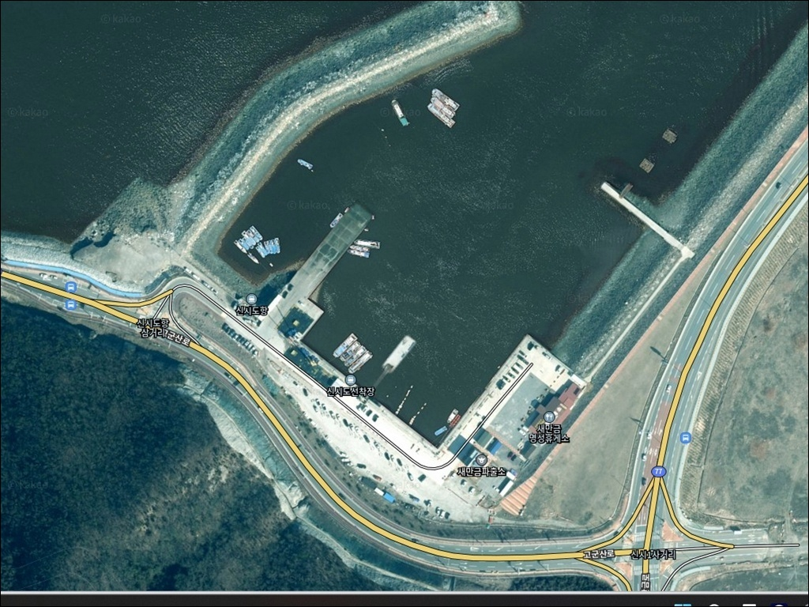
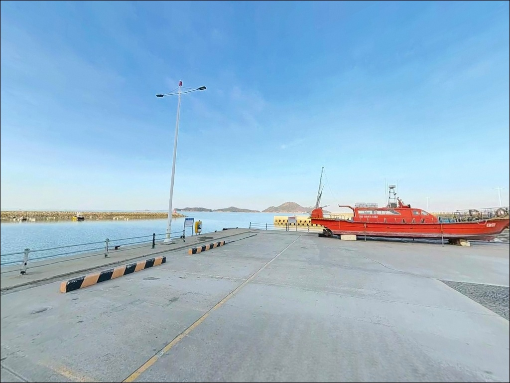
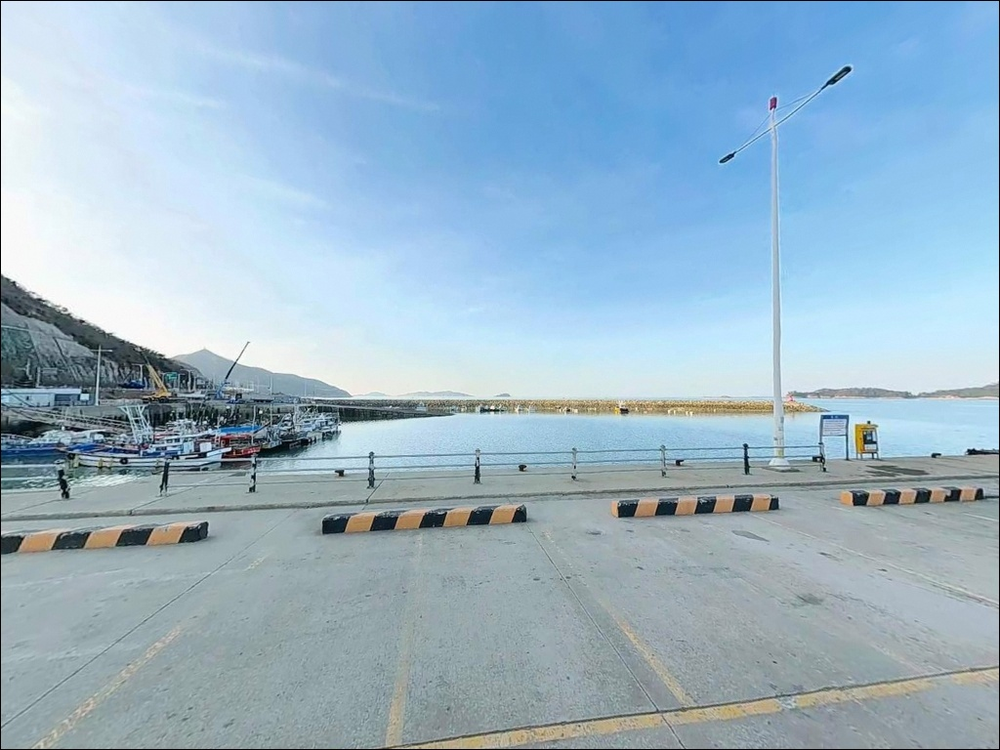
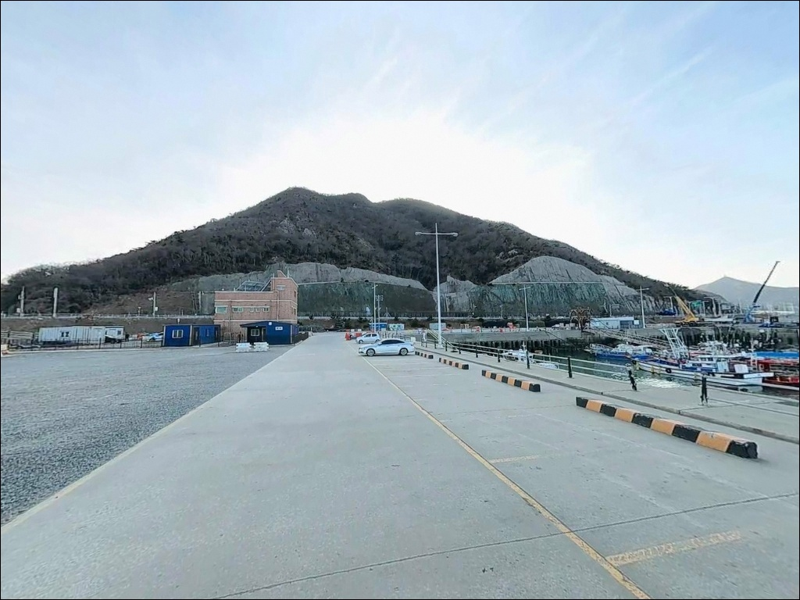
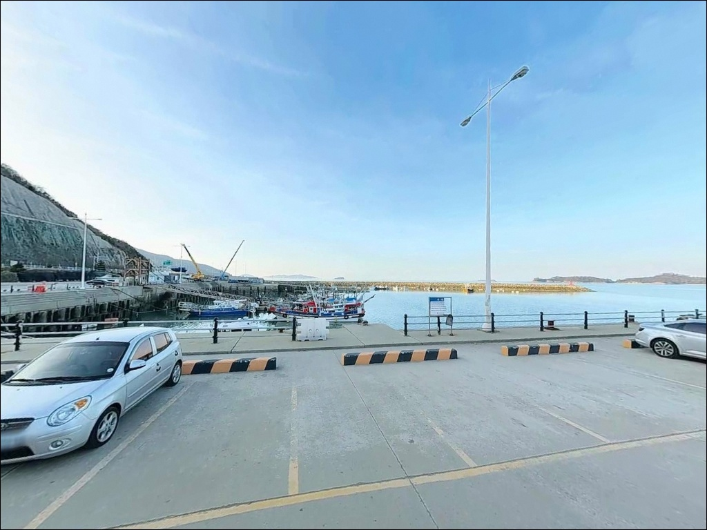
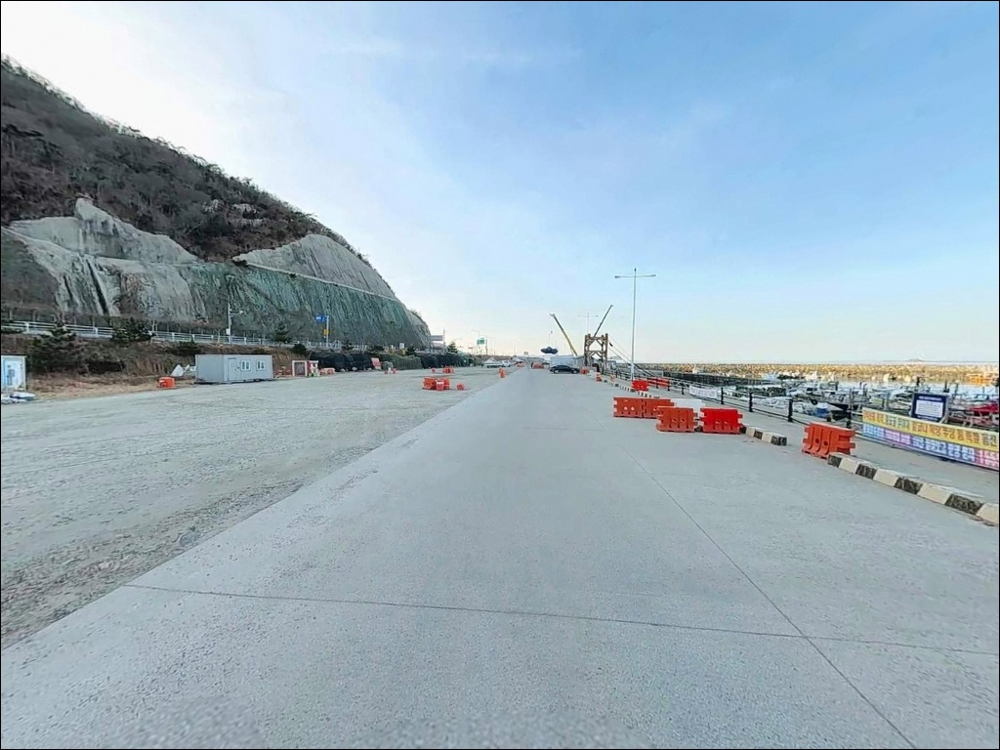
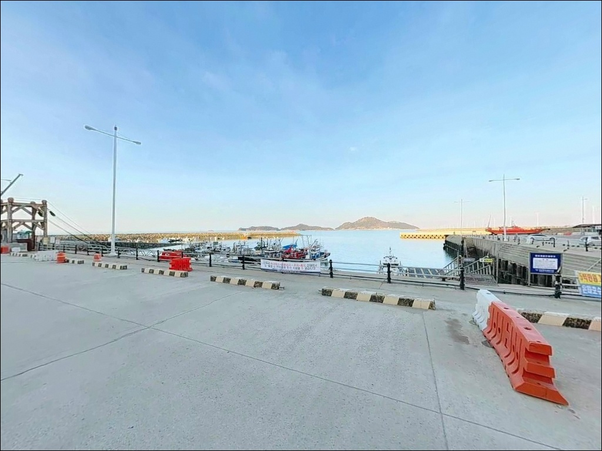
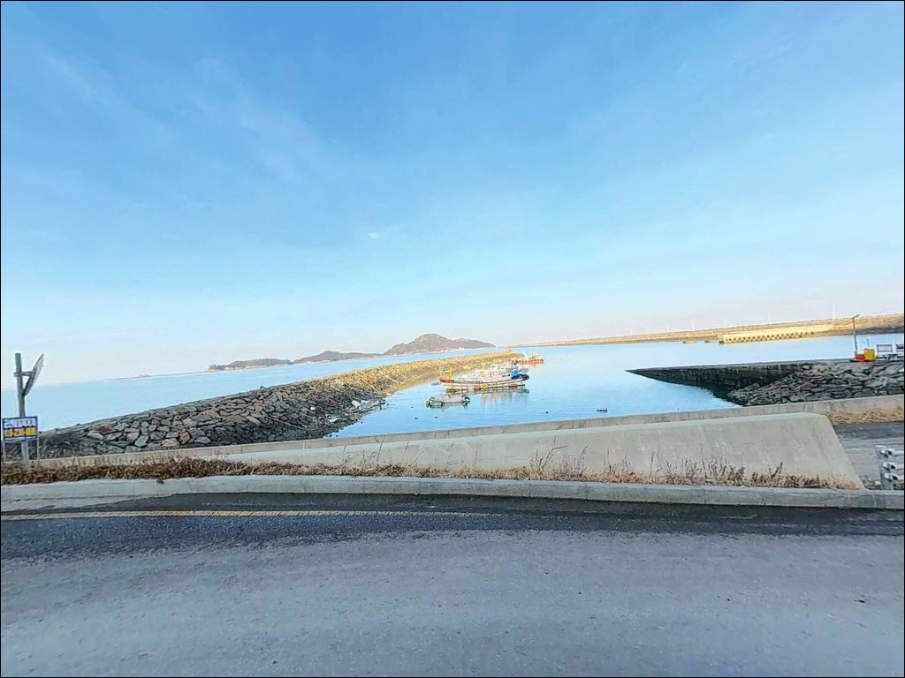
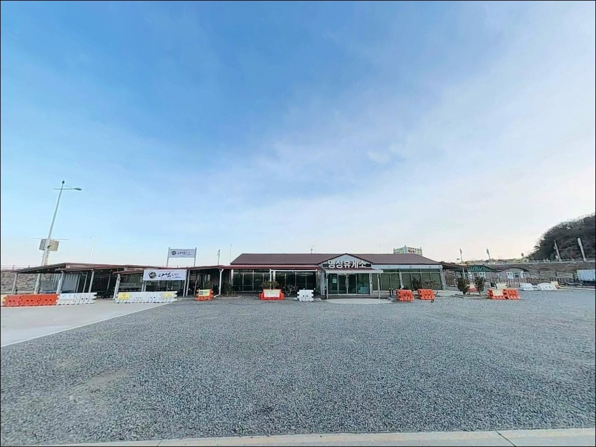

신시도항, 신시도선착장, 신시도 전북 군산시 노을빛이 스며드는 차박, 낚시 겸용 감성 장소
이 페이지에는 광고(제휴 링크 포함)가 있으며, 광고 링크를 통해 구매하면 운영자가 판매 수익 또는 수수료를 받을 수 있습니다. 포인트 사진: 카카오맵 스카이뷰·로드뷰. 이 페이지의 지도·사진 이미지는 카카오맵의 실제 서비스 이미지와 다를 수 있습니다.


포인트 안내
신시도항
전북 군산시 옥도면 신시도리 258
신시도항에서 가장 많이 틀리는 판단은
서해 방파제니까 조류가 약할 거라는 예상입니다.
사리 전후에 방파제에 오르면
강한 조류에 채비가 밀려
루어든 원투든 포인트 유지 자체가 어려워집니다.
물때 계산 없는 방문이 헛걸음을 만드는
구조입니다.
이 글은 신시도항의
진입 동선, 차박 여건, 낚시 지형 구조,
방식별 공략 조건에 집중합니다.
조황 단정이나 특정 어종 보장은
이 글의 범위에 포함되지 않습니다.

1. 진입 동선과 포인트 접근성
신시도는 2010년 새만금 방조제 준공 이후
육지에서 차량으로 직접 들어갈 수 있는 섬입니다.
새만금로(77번 국도)를 타고 비응도를 지나
야미도 방향으로 약 12km 이동한 뒤,
야미도에서 2.7km를 더 가면 신시도에 닿습니다.
방조제 도로는 직선 구간이 많아
급경사나 비포장 구간이 없는 편입니다.
섬 내부 항구까지 이어지는 도로도
포장 상태가 양호해
승용차부터 소형 캠핑카까지 진입에 무리가 없습니다.
항 내부는 어선 계류 공간과
방파제 입구 공터가 함께 있어
회차 자체는 무난한 구조입니다.
다만 인기 포인트인 만큼
성수기에는 낚시·레저 방문객이 몰려
주차 공간이 빠르게 찰 수 있습니다.
신시도 공식 주차장(신시도리 산5-83)이
항구 혼잡 시 활용 가능한 대안 주차지입니다.

2. 차박 환경과 야간 체류 여건
신시도항은 낚시·캠낚 이용객이 꾸준히 찾는 곳으로,
차박 자체가 불가능한 환경은 아닙니다.
방파제 내항 석축 쪽은 가로등이 있어
야간 시야가 어느 정도 확보되고,
명성휴게소 인근에 화장실이 있어
장기 체류 여건을 뒷받침하는 기본 인프라는 갖춰져 있습니다.
주말·성수기에는 방문객이 집중되어
조용한 차박 분위기를 기대하기 어렵습니다.
혼잡을 피하려면 평일 방문이 현실적이며,
외항 방향은 서해 바람 노출이 강한 편이라
야간 체류 자리는 내항 쪽을 기준으로 잡는 것이 안정적입니다.
군산해양경찰서 파출소가 방파제 인근에 있어
야간 순찰이 이루어지는 구간입니다.
기상 예보상 바람이 강한 날에는
외항 방향 파도와 너울 영향을 받을 수 있어
출발 전 해상 기상 확인이 먼저입니다.


3. 주변 편의시설 및 인프라 현황
신시도 내에는 낚시점과 매점이 없습니다.
이 점이 초행 낚시인이 가장 많이 놓치는 부분입니다.
미끼, 채비 소품, 얼음, 식수는
비응도 초입의 낚시점과 편의점에서
방조제를 넘기 전에 완전히 갖춰야 합니다.
방파제 인근 명성휴게소에서는
간단한 먹거리와 음료를 이용할 수 있습니다.
화장실도 이 구역에서 확인됩니다.
국립 신시도자연휴양림(신시도길 271)은
커뮤니티센터에서 음료와 간식 구입이 가능해
장기 체류 시 보조 인프라로 활용 가능한 시설입니다.
응급 상황이 발생하면 군산 시내까지
이동 거리가 상당합니다.
비상약품·연료·생수는
방조제를 넘기 전에 준비해 두는 것이 기본입니다.

4. 신시도항 방문 전 반드시 챙겨야 할 준비사항
방문 전 가장 먼저 할 일은
바다타임에서 군산 기준 물때를 확인하는 것입니다.
서해안 특성상 조수 간만의 차가 크고,
사리 전후에는 외항 석축 구간의 수심이 낮아지면서
조류도 동시에 강해져 채비 운용이 어려워집니다.
조금 전후 또는 만조 전후를 노려
출발 시각을 맞추는 것이 이 포인트의 기본 전략입니다.
방조제 구간과 외항 방향은 바람 노출이 강한 편이어서
기상 예보와 다른 돌풍이 발생하는 경우가 있습니다.
당일 아침 기상청 해상 예보를 재확인하는 것이
헛걸음을 막는 조건입니다.
암초·테트라포드 구간에서 채비 손실이 잦으므로
여분 채비는 넉넉하게 챙겨 가는 편이 좋습니다.
신시도항은 지방어항으로
어선과 레저보트가 함께 계류하는 공간입니다.
선박 진출입 동선과 어구에 접촉하지 않도록
자리를 잡는 것이 기본 매너입니다.
야간 낚시 시에는 구명조끼와 헤드랜턴을 반드시 착용하고,
신시·가력 배수갑문 등 출입통제구역은
무단 진입 시 과태료 부과 대상이므로
출발 전 허용 구역 여부를 확인해야 합니다.

5. 지형 기반 낚시 여건 분석
신시도항의 핵심 구조는
내항 선착장과 외항 방파제가 분리된 형태입니다.
내항 석축 구간은 벽돌형 평평한 발판이
길게 이어져 있어 안정적인 조건에서 낚시가 가능하고,
가로등이 켜져 있어
야간 낚시 접근성도 내항 쪽이 우선입니다.
외항 석축 구간에는 테트라포드가 일부 배치되어 있습니다.
들물이 시작될 때 조류 흐름이 살아나는 구간이며,
평균 수심은 2.7~4m 수준이지만
만조 시 갯바위 인접 구간에서는
더 깊은 수심이 형성되는 패턴을 보입니다.
외항 쪽은 가로등이 없어
야간 집어등 없이는 조과를 기대하기 어려운 구간입니다.
방파제 왼편 갯바위 구간은
연안을 따라 도보 접근이 가능한 구간과
선박 또는 긴 등산 진입이 필요한 구간으로 나뉩니다.
저질은 주로 모래와 펄로 구성되어 있어
원투낚시 채비가 밑걸림 없이 운용되는 조건입니다.
최신 조황은 출조 전에 꼭 검색해 보시기 바랍니다.


6. 포인트에 어울리는 낚시 스타일
루어낚시, 특히 우럭을 대상으로 한 방식이
신시도항에서 가장 실속 있는 낚시로 꼽힙니다.
선착장 코너 구간과 방파제 석축이 주 포인트이며,
사리물때 만조 전후 타이밍에
입질이 살아나는 패턴이 있습니다.
긴 방파제보다 선착장 코너 구간을 먼저 탐색하는 것이
이 포인트에서 효율적인 방식입니다.
야간 갈치·풀치 낚시는
명성휴게소 앞 내항 석축 구간에 집중됩니다.
집어등을 이용한 전층 공략이 이 구간에 잘 맞으며,
좋은 자리 경쟁이 생길 만큼 인기 있는 타이밍이 있어
야간 출조라면 일찍 자리를 확보하는 것이 우선입니다.
고등어는 들물이 시작되는 시점에
외항 석축에서 올라오는 패턴이 있습니다.
원투낚시는 모래·펄 저질 조건과 잘 맞는 방식입니다.
도다리, 붕장어, 노래미 등을 대상으로
내항 석축에서 편안하게 운용할 수 있는 스타일입니다.
찌낚시는 방파제 끝단이나 인근 갯바위 진입 시
감성돔과 농어를 노려볼 수 있는 조건이며,
만조 수심이 깊어지는 타이밍이 찌낚시 운용에 유리합니다.

7. 대안 포인트와 플랜 B 동선
신시도항이 혼잡하거나 조류 조건이
여의치 않을 때 첫 번째 대안은
야미도입니다.
신시도에서 2.7km 거리로,
같은 고군산군도 해안선에 위치해
유사한 서해 도서권 낚시 여건을 기대할 수 있습니다.
갯바위 낚시가 활성화된 곳으로
신시도보다 알려진 포인트이기도 합니다.
방조제 방향으로 되돌아가면
비응도 풍차방파제가 있습니다.
길이 2.5km에 달하는 대형 방파제로
많은 인원을 수용할 수 있어
신시도가 혼잡할 때 안정적인 대안이 됩니다.
감성돔과 우럭 포인트로 알려져 있으며,
다수 방문객이 겹쳐도 자리 여유가 있는 편입니다.
새만금방조제 돌고래쉼터 인근 구간은
삼치·고등어·숭어·우럭·주꾸미 등
다양한 어종을 노려볼 수 있는 광역 포인트입니다.
신시도항을 메인으로 삼고
방조제 쉼터 구간을 보조로 활용하는 동선이
이 권역에서 가장 효율적인 이동 방식입니다.

물때를 알면
신시도항의 가능성이 달라집니다
우럭 루어부터 야간 갈치낚시, 원투·찌낚시까지
다양한 방식을 소화할 수 있는 구조라는 점에서
신시도항은 고군산군도 권역의
실속 있는 방파제 포인트입니다.
새만금 방조제 덕분에 접근성이 좋고,
방파제 석축의 발판도 안정적이라
처음 찾는 낚시인도 공략하기 어렵지 않은 구조입니다.
반면 물때를 모르고 사리 전후에 도착하거나,
신시도 내 보급이 될 거라 생각하고
비응도를 그냥 지나쳤다면
하루 낚시 전체가 어긋날 수 있습니다.
물때 확인, 비응도 진입 전 완전 보급, 출입통제구역 사전 확인,
이 세 가지를 갖추고 간다면
신시도항의 가능성을 제대로 볼 수 있는 출조가 됩니다.
야간 집어등 아래 갈치 입질을 기다리며
내항 석축 옆에 차를 세우고 하룻밤을 겸하는 낚시인이라면,
고군산군도의 섬 분위기와 함께
기억에 남는 차박낚시가 될 수 있는 포인트입니다.